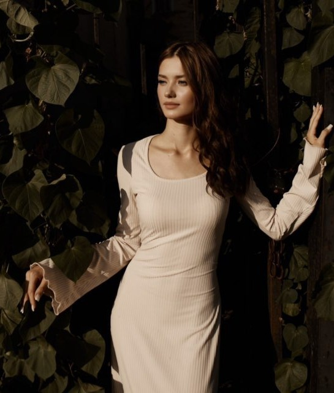

Психолог, который верит: за любым «со мной что-то не так» скрывается человек, с которым всё в порядке, — просто ему сейчас трудно.

В психологию я пришла из искреннего интереса к людям — к тому, как мы устроены, почему нам бывает трудно и что помогает нам меняться. Со временем интерес стал профессией, а профессия — делом, которое я по-настоящему люблю.
Я знаю по опыту своих клиентов: изменения возможны в любом возрасте и из любой точки. Иногда достаточно нескольких встреч, чтобы жизнь начала разворачиваться в свою сторону. Быть свидетелем этих перемен — самое ценное в моей работе.
Психолог учится всю жизнь — это часть профессии, и мне это по-настоящему нравится.
Специальность «Психология». Фундаментальная подготовка: общая, возрастная и клиническая психология, психодиагностика.
Программа профессиональной переподготовки: доказательный подход к работе с тревогой, депрессивными состояниями и убеждениями.
Повышение квалификации: работа с конфликтами, кризисами и коммуникацией в паре.
Специализированный курс: профилактика и восстановление, техники саморегуляции.
Регулярная супервизия у опытных коллег и собственная терапия — стандарт качества, который я считаю обязательным.
Фотографии документов скоро появятся здесь. Оригиналы всегда можно посмотреть в кабинете.
Не бывает двух одинаковых историй. Я подбираю инструменты под вас — ваш темп, ваш опыт, вашу готовность.
Я не обещаю «решить всё за одну встречу» и честно говорю о том, как вижу нашу работу и сколько она может занять.
Каждый клиент для меня — не «случай», а человек. Я рядом на всём пути: от первого сообщения до устойчивого результата.